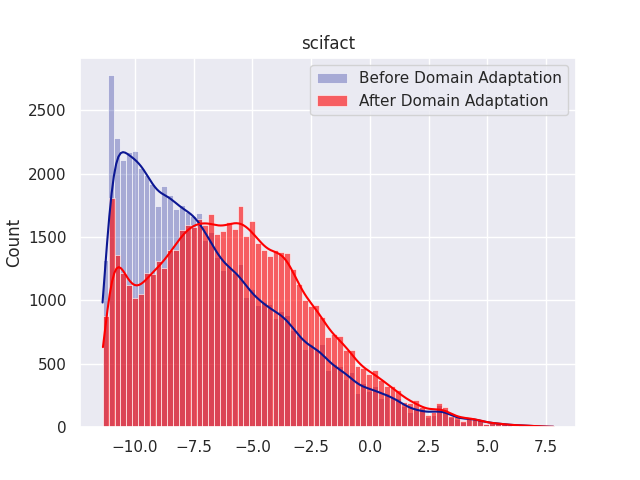
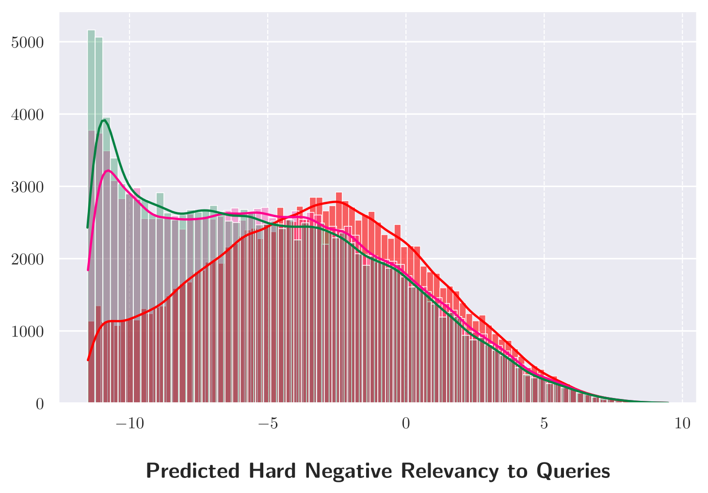
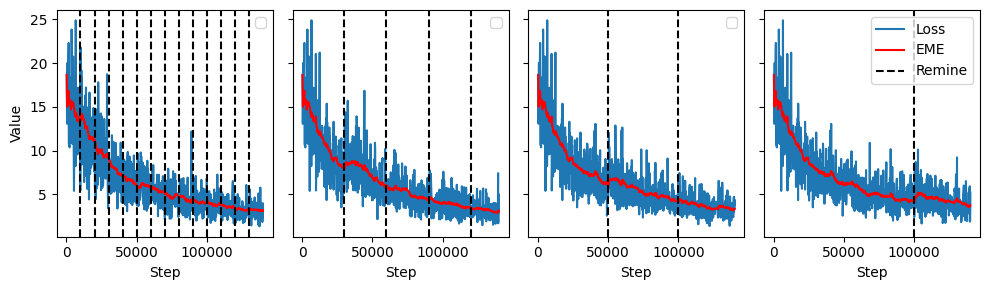
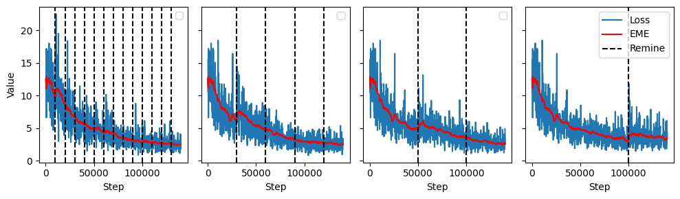
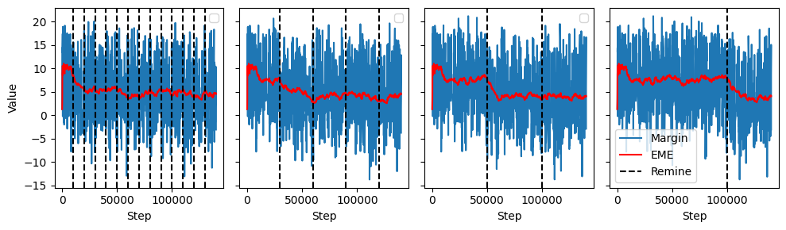
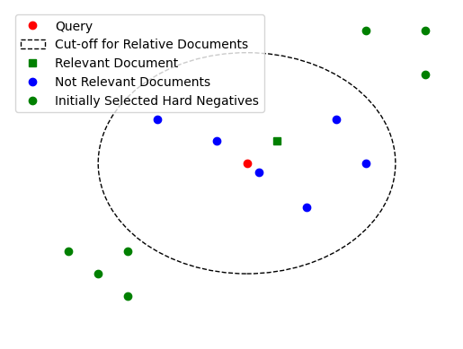
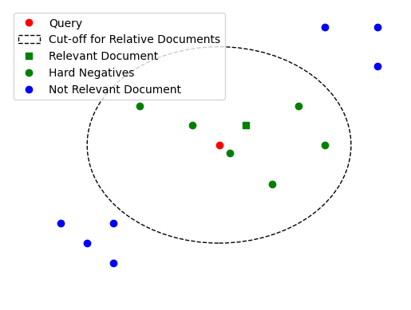
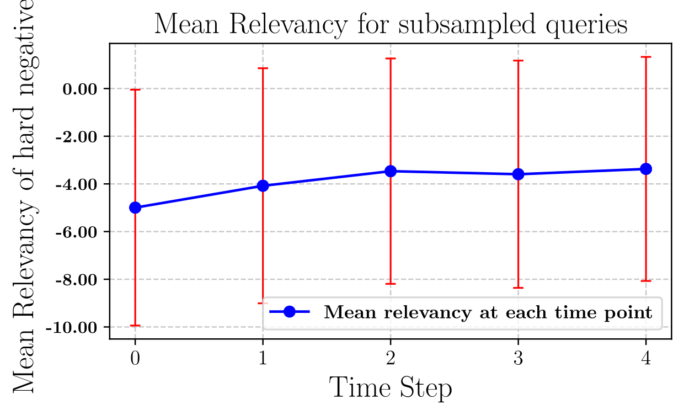
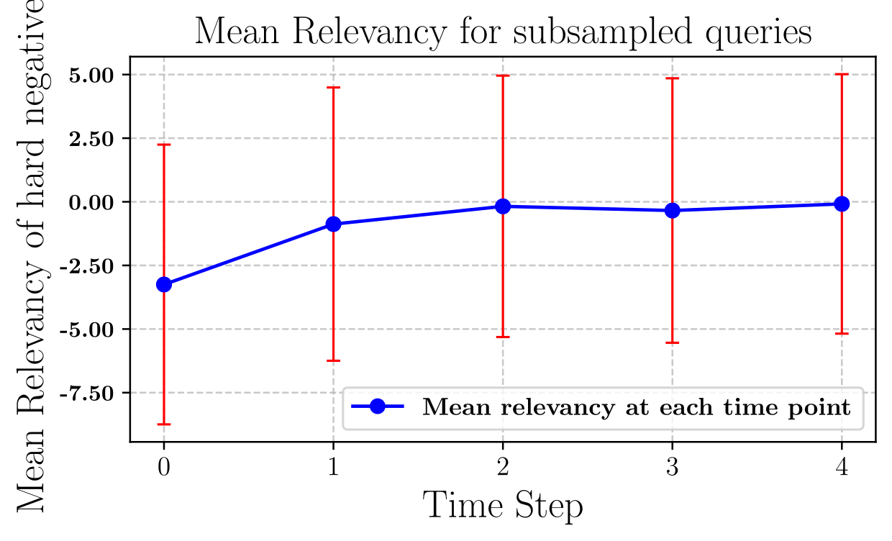

原文: arXiv:2501.14434（v1，2025-01-24） 说明: 中英对照供阅读。英文为论文原文（PDF 转写，公式按论文整理）；中文为对应翻译。图表编号与原文一致。caption 保留英文并附中译。数值原样，未改动。
预印本： arXiv:2501.14434v1 [cs.IR]，2025 年 1 月 24 日。
Remining Hard Negatives for Generative Pseudo Labeled Domain Adaptation¶
面向生成式伪标签域适应的难负例重挖掘¶
Authors / 作者： Goksenin Yuksel, David Rau, Jaap Kamps
Affiliation / 单位： University of Amsterdam，Amsterdam, The Netherlands
Email / 邮箱： goksenin.yuksel@student.uva.nl；d.m.rau@uva.nl；kamps@uva.nl
Abstract / 摘要¶
EN. Dense retrievers have demonstrated significant potential for neural information retrieval; however, they exhibit a lack of robustness to domain shifts, thereby limiting their efficacy in zero-shot settings across diverse domains. A state-of-the-art domain adaptation technique is Generative Pseudo Labeling (GPL). GPL uses synthetic query generation and initially mined hard negatives to distill knowledge from cross-encoder to dense retrievers in the target domain. In this paper, we analyze the documents retrieved by the domain-adapted model and discover that these are more relevant to the target queries than those of the non-domain-adapted model. We then propose refreshing the hard-negative index during the knowledge distillation phase to mine better hard negatives. Our remining R-GPL approach boosts ranking performance in 13/14 BEIR datasets and 9/12 LoTTe datasets. Our contributions are (i) analyzing hard negatives returned by domain-adapted and non-domain-adapted models and (ii) applying the GPL training with and without hard-negative re-mining in LoTTE and BEIR datasets.
中. 稠密检索器在神经信息检索中已显示出相当大的潜力；然而它们对域偏移不够稳健，因而限制了其在多种领域的零样本设定下的效力。一种先进的域适应技术是生成式伪标签（Generative Pseudo Labeling, GPL）。GPL 用合成查询生成，以及一开始就挖好的难负例，把交叉编码器的知识蒸馏到目标域的稠密检索器。本文分析域适应后的模型取回的文档，发现这些文档相对未做域适应的模型，与目标查询更相关。作者于是提出在知识蒸馏阶段刷新难负例索引，以挖到更好的难负例。重挖掘方法 R-GPL 在 13/14 个 BEIR 数据集和 9/12 个 LoTTe 数据集上提升了排序性能。贡献是：(i) 分析域适应模型与未适应模型返回的难负例；(ii) 在 LoTTE 与 BEIR 上，对比做与不做难负例重挖掘的 GPL 训练。
1 Introduction / 引言¶
EN. Dense passage retrieval (Zhao et al., 2023) is a key approach for text retrieval on large corpora, in the crucial first stage of modern NLP pipelines. The underlying idea is to represent queries and passages as low-dimensional vectors (also known as embeddings) to measure relevance by comparing the similarity between the query and document embeddings (Thakur et al., 2021a). Embedding queries and passages independently make these models efficient and applicable as first-stage retrievers on large corpora. Document embeddings can be pre-computed and stored, reducing computational overhead at inference time. However, they suffer from overfitting to domain-specific training data (Ma et al., 2021) and underperforming in novel test domains (Thakur et al., 2021b).
中. 稠密段落检索（Zhao et al., 2023）是大规模语料上文本检索的关键做法，处在现代 NLP 流水线至关重要的第一阶段。基本想法是把查询和段落表示成低维向量（也就是嵌入），通过比较查询嵌入与文档嵌入的相似度来衡量相关性（Thakur et al., 2021a）。查询与段落各自独立编码，使这些模型高效，并能作为大规模语料上的一阶段检索器。文档嵌入可以预先算好并存起来，从而降低推理时的计算开销。然而，它们会过拟合到特定领域的训练数据（Ma et al., 2021），并在新的测试域上表现不足（Thakur et al., 2021b）。
EN. More robust approaches, such as cross-encoder and late interaction models, exist in the literature but come with computational and memory overheads. Therefore, they are limited in inference time efficiency, which is the prime concern for any practical application in production systems.
中. 文献里还有更稳健的做法，例如交叉编码器和延迟交互模型，但它们带来计算与内存开销。因此它们在推理时间效率上受限，而这正是生产系统里任何实际应用最关心的一点。
EN. The lower effectiveness of dense retrieval models out-of-domain hinders the application of dense retrieval systems in zero-shot settings, making them less viable choices compared to cross-encoders or late-interaction models. To overcome this limitation, “domain adaptation” methodologies have been proposed. Figure 1 shows the shift in score distribution between the base zero-shot model and the domain-adapted model. Documents retrieved by the domain-adapted model are clearly more relevant to the query than those retrieved by the non-domain-adapted model. This demonstrates the potential of domain adaption of models, but also prompts the question if we can exploit this to further improve the domain adaptation. This directly motivates the main research question of this paper: Can the domain-adapted model provide more informative hard negatives to further adapt the model to the target domain?
中. 稠密检索模型在域外效果偏低，妨碍了稠密检索系统在零样本设定下的应用，使它们相对交叉编码器或延迟交互模型不那么站得住。为克服这一限制，已有人提出「域适应」方法。图 1 显示基线零样本模型与域适应模型之间的分数分布偏移。域适应模型取回的文档，明显比未做域适应的模型取回的文档更与查询相关。这说明模型域适应有潜力，同时也引出一个问题：能否利用这一点，把域适应再往前推一步。这直接构成本文的主要研究问题：域适应后的模型，能否提供信息量更大的难负例，从而把模型进一步适配到目标域？
Caption EN. Figure 1: Score distribution of top 100 documents retrieved before and after domain adaptation. Estimated relevance scores based on the teacher model from GPL.
Caption 中. 图 1：域适应前后取回的前 100 篇文档的分数分布。相关分数由 GPL 的教师模型估计。

EN. Unsupervised domain adaptation exploits two methods that improve performance for adapting models out-of-domain: knowledge distillation (KD) and query generation (QG) (Wang et al., 2022; Ma et al., 2021; Thakur et al., 2021b). Considering that human-generated relevance judgment is quite costly (Xin et al., 2022; Thakur et al., 2021a; Ma et al., 2021; Bonifacio et al., 2022), robust models can be used effectively for pseudo labeling instead, and KD becomes an essential approach to improving the capacity of dense retrievers (Thakur et al., 2021a; Hofstätter et al., 2020). Given a source domain with sufficient training signals, the goal is to transfer the dense retrieval (DR) model to a target domain without access to human editorial relevance labels. Query generation (QG) models introduce synthetic training data by generating new queries to form positive pairs with documents (e.g., Balog et al., 2006).
中. 无监督域适应借助两种能提升模型域外表现的方法：知识蒸馏（knowledge distillation, KD）和查询生成（query generation, QG）（Wang et al., 2022; Ma et al., 2021; Thakur et al., 2021b）。考虑到人工相关性判断相当昂贵（Xin et al., 2022; Thakur et al., 2021a; Ma et al., 2021; Bonifacio et al., 2022），可以用稳健模型有效地做伪标注来代替，于是 KD 成为提升稠密检索器能力的一条必要途径（Thakur et al., 2021a; Hofstätter et al., 2020）。给定一个训练信号充足的源域，目标是在拿不到人工编辑的相关性标签时，把稠密检索（dense retrieval, DR）模型迁到目标域。查询生成模型通过生成新查询、与文档组成正例对，引入合成训练数据（例如 Balog et al., 2006）。
EN. Combining both procedures introduces domain-specific synthetic data to further fine-tune models in a specific domain without the need for human labels. GPL (Wang et al., 2022) has demonstrated to be a very effective non-hybrid dense retriever domain adaptation method (Ren et al., 2023). GPL distills knowledge from the cross-encoder model to the dense retrieval model using synthetic training data. To this end, GPL performs hard-negative mining step at the beginning of training, using pre-trained MSMARCO dense retrievers. The hard negatives are mined before the training and remain unchanged throughout the entire domain-adaptation process. GPL shows significant performance improvements on 18 of 19 BEIR datasets over previous methods.
中. 把两套做法合在一起，就能引入领域专用的合成数据，在不需要人工标签的情况下，针对特定领域继续微调模型。GPL（Wang et al., 2022）已被证明是一种非常有效的、非混合式稠密检索器域适应方法（Ren et al., 2023）。GPL 用合成训练数据，把知识从交叉编码器模型蒸馏到稠密检索模型。为此，GPL 在训练开始时做一步难负例挖掘，使用预训练的 MSMARCO 稠密检索器。难负例在训练之前挖好，并在整个域适应过程中保持不变。相对既往方法，GPL 在 19 个 BEIR 数据集中的 18 个上显示出显著性能提升。
EN. In this paper, we extend GPL by proposing to remine hard negatives during the domain adaptation process. The main idea is that instead of using the ranker that has been trained on the source domain to mine hard negatives, we employ the model undergoing the domain adaptation. During training, the model learns to retrieve more relevant hard negatives, optimizing the margin of the top-ranked documents. Our experiments show that remining hard negatives by the domain-adapted model during training can improve performance over using initially retrieved, static hard negatives. Our analysis shows that the hard negatives retrieved by the domain-adapted model are significantly more relevant to the queries than pre-retrieved hard negatives.
中. 本文扩展 GPL，提出在域适应过程中重挖难负例。主要想法是：挖难负例时，不用那个在源域上训练好的排序器，而用正在做域适应的模型。训练过程中，模型学会取回更相关的难负例，并优化排在前面的文档的间隔。实验表明，训练期间用域适应模型重挖难负例，比使用一开始取回的、静态的难负例，性能更好。分析表明，域适应模型取回的难负例，相对预先取回的难负例，与查询显著更相关。
EN. Our main contributions are the following. First, we complement the original work of GPL by evaluating it on the LoTTE benchmark. Second, we improve GPL by proposing to continuously remine hard negatives with the model undergoing domain adaptation and demonstrate performance improvements on BEIR and LoTTe benchmarks. Our method boosts the ranking performance of the domain-adapted model in 13 out of 14 datasets on BEIR and in 9 out of 12 on LoTTE. Third, in an extensive analysis we investigate hard negatives returned by the domain-adapted retriever and show why remining hard negatives is effective for domain adaptation.
中. 主要贡献如下。第一，在 LoTTE 基准上评测 GPL，补上原工作没有覆盖的这一评测。第二，提出用正在做域适应的模型持续重挖难负例，从而改进 GPL，并在 BEIR 与 LoTTe 基准上展示性能提升。本方法把域适应模型的排序性能，在 BEIR 的 14 个数据集中提升了 13 个，在 LoTTE 的 12 个中提升了 9 个。第三，用一套较充分的分析考察域适应检索器返回的难负例，并说明为什么重挖难负例对域适应有效。
EN. The rest of this paper is structured as follows. §2 embeds our work in the literature. §3 details our novel domain adaptation approach based on remining hard negatives. §4 details our experimental setup. §5 shows the experimental results demonstrating the retrieval effectiveness of domain adaptation. §6 conducts an extensive analysis how remining hard negatives impacts domain adaptation. The paper ends in §7 with discussion and conclusions.
中. 余下结构如下。§2 把本工作放进文献。§3 详述基于重挖难负例的新域适应方法。§4 详述实验设置。§5 给出实验结果，展示域适应的检索效果。§6 做一套较充分的分析，看重挖难负例如何影响域适应。论文在 §7 以讨论和结论结束。
2 Related Work / 相关工作¶
EN. This section details related work on robust ranking models, on unsupervised domain adaptation, and on hard negative mining.
中. 本节详述三方面相关工作：稳健排序模型、无监督域适应，以及难负例挖掘。
2.1 Robust Ranking Models / 稳健排序模型¶
EN. Cross-encoders (Nogueira and Cho, 2020) demonstrate better performance and are less prone to the out-of-domain problem (Thakur et al., 2021b). They concatenate the query and passage and predict a relevance score using cross-attention. Despite their superior performance and resilience to domain shift, the requirement to concatenate the query and passage renders them less suitable for a production setting due to extremely high computational overhead.
中. 交叉编码器（Nogueira and Cho, 2020）表现更好，也不那么容易陷入域外问题（Thakur et al., 2021b）。它们把查询和段落拼在一起，用交叉注意力预测一个相关性分数。尽管性能更优、也更能扛住域偏移，必须把查询和段落拼起来这一点，使它们因计算开销极高而不太适合生产设定。
EN. Similarly, late interaction models have shown robustness to domain shift while delivering performance comparable to cross-encoders (Thakur et al., 2021b; Khattab and Zaharia, 2020; Santhanam et al., 2022). These models delay the interaction between query and document tokens until the final stage. Consequently, they provide a significant speedup compared to cross-encoder models that use cross-attention from the beginning (Khattab and Zaharia, 2020). However, late interaction models are still inefficient compared to dense retrieval models due to the need to compare every query and document token embedded in the final stage. Additionally, they consume significant memory if indexed by approximate nearest neighbor search methods like FAISS (Johnson et al., 2021) to expedite inference (Macdonald et al., 2021).
中. 类似地，延迟交互模型对域偏移也表现出稳健性，同时性能与交叉编码器相当（Thakur et al., 2021b; Khattab and Zaharia, 2020; Santhanam et al., 2022）。这些模型把查询词元与文档词元的交互推迟到最后阶段。因此，相对从一开始就使用交叉注意力的交叉编码器，它们有显著加速（Khattab and Zaharia, 2020）。然而，相对稠密检索模型，延迟交互模型仍然低效，因为最后阶段需要比较每一个查询词元与文档词元的嵌入。此外，若用 FAISS（Johnson et al., 2021）这类近似最近邻搜索来建索引以加快推理，它们会消耗可观的内存（Macdonald et al., 2021）。
2.2 Unsupervised Domain Adaptation / 无监督域适应¶
EN. Query Generation (QG) methods construct synthetic training data by using documents from the target domain to generate corresponding (pseudo) queries, which aims to augment the training data by generating queries that fit the target domain. QGen (Ma et al., 2021) trains an Auto-encoder in the source domain to generate synthetic questions from a target domain document. They use binary-level relevancy labels to train the networks on generated query-document pairs. On the other hand, GPL (Wang et al., 2022) generate synthetic queries with a pre-trained T5 model and uses cross-encoders to label the relevancy of generated query-document pairs. This method extends the QGen method by replacing binary relevance labels with continuous relevance scores. GPL boosts the performance of the dense retriever and demonstrates strong performance in unsupervised domain adaptation for dense retrievers (Ren et al., 2023).
中. 查询生成（QG）方法用目标域文档生成对应的（伪）查询，从而构造合成训练数据，目的是生成贴合目标域的查询来扩充训练集。QGen（Ma et al., 2021）在源域训练一个自编码器，从目标域文档生成合成问题。他们用二值级相关性标签，在生成的查询–文档对上训练网络。另一方面，GPL（Wang et al., 2022）用预训练的 T5 模型生成合成查询，并用交叉编码器标注生成的查询–文档对的相关性。这一方法扩展了 QGen：用连续相关性分数替换二值相关性标签。GPL 提升了稠密检索器的性能，并在稠密检索器的无监督域适应上表现出强结果（Ren et al., 2023）。
EN. Similar ideas to GPL have been explored for cross-encoders. InPars (Bonifacio et al., 2022) uses a large language model (LLM) to generate synthetic queries with few-shot and zero-shot settings. They use OpenAI’s public API to prompt GPT-3 to generate syntetic queries for a document, showcasing that fine-tuning cross-encoders on the synthetic data yields very strong results on different datasets. Their research demonstrates that synthetic queries provide a solid learning signal to fine-tune neural IR models. Note that Bonifacio et al. (2022) did not further fine-tune dense retriever models in their experiments.
中. 与 GPL 类似的想法也在交叉编码器上被探索过。InPars（Bonifacio et al., 2022）用大语言模型（LLM），在少样本和零样本设定下生成合成查询。他们用 OpenAI 的公开 API 提示 GPT-3，为一篇文档生成合成查询，并表明在合成数据上微调交叉编码器，能在不同数据集上得到很强的结果。他们的研究表明，合成查询为微调神经 IR 模型提供了扎实的学习信号。需要说明的是，Bonifacio et al.（2022）在实验中没有进一步微调稠密检索模型。
EN. Knowledge Distillation (KD) refers to the process of transferring knowledge from a more capable model (called the teacher) to a less capable model (called the student) (Hofstätter et al., 2020). Applied to our setup, the goal is to improve the standard dense retriever (the student) using a more robust model (the teacher) on a given dataset. KD is a commonly used strategy in DR. GPL (Wang et al., 2022) and AugSBERT (Thakur et al., 2021a) use cross-encoder to annotate unlabeled synthetic query-doc pairs to train the bi-encoder. Unlike the above methods, SPAR (Chen et al., 2022) proposes distilling knowledge from the BM25 to the DR model to transfer relevance signals from a sparse model into dense retrieval.
中. 知识蒸馏（KD）指把知识从一个能力更强的模型（称为教师）迁移到一个能力较弱的模型（称为学生）的过程（Hofstätter et al., 2020）。放到本文设定里，目标是在给定数据集上，用一个更稳健的模型（教师）来改进标准稠密检索器（学生）。KD 是 DR 里常用的策略。GPL（Wang et al., 2022）和 AugSBERT（Thakur et al., 2021a）用交叉编码器标注无标签的合成查询–文档对，用以训练双编码器。与上述方法不同，SPAR（Chen et al., 2022）提出把知识从 BM25 蒸馏到 DR 模型，把稀疏模型里的相关性信号迁进稠密检索。
2.3 Hard Negatives / 难负例¶
EN. Hard negatives are irrelevant passages with a high semantic similarity to the query. When included in the training, they have been shown to improve the ranking performance of dense retrievers by boosting the capacity to distinguish between hard cases where a passage could be relevant but is not.
中. 难负例是与查询语义相似度很高、但并不相关的段落。把它们放进训练后，已被证明能提升稠密检索器的排序性能：增强模型区分困难情形的能力——一段文本看起来可能相关，实际上却不是。
EN. An early hard negative mining strategy is to sample lexically similar texts returned by BM25, Karpukhin et al. (2020) uses BM25 top documents as hard negatives. This strategy is efficient and only needs to be computed once. Hard negatives are kept fixed throughout the process. A drawback of this approach is that hard negatives are biased towards exact term matching. Later research explored dynamic hard negative mining techniques with dense retrievers. ANCE (Xiong et al., 2020) proposes to sample from the top retrieved texts by the optimized retriever itself, along with an asynchronous index refresh mechanism during training. REALM (Guu et al., 2020) uses the dense retriever document encoder and refreshes the index of document embeddings similar to ANCE using the document embedder every k steps.
中. 一种早期的难负例挖掘策略是采样 BM25 返回的、词面上相似的文本，Karpukhin et al.（2020）把 BM25 的顶部文档用作难负例。这一策略高效，而且只需计算一次。难负例在整个过程中保持固定。其缺点是难负例偏向精确词项匹配。后来的研究用稠密检索器探索动态难负例挖掘。ANCE（Xiong et al., 2020）提出从优化中的检索器自己取回的顶部文本里采样，并在训练期间用异步索引刷新机制。REALM（Guu et al., 2020）使用稠密检索器的文档编码器，并类似 ANCE，每隔 k 步用文档嵌入器刷新文档嵌入索引。
3 Method / 方法¶
EN. This section details our domain adaptation approach based on repeatedly mining hard negatives during training and domain adaptation.
中. 本节详述本文的域适应方法：在训练和域适应期间反复挖掘难负例。
3.1 Dense Passage Retrieval / 稠密段落检索¶
EN. We follow the dense passage retrieval framework for generating embeddings for documents and queries, namely \(E(d)\) and \(E(q)\).
中. 作者遵循稠密段落检索框架，为文档和查询生成嵌入，分别记为 \(E(d)\) 和 \(E(q)\)。
EN. Given an input passage1 \(x = [\mathrm{CLS}], w_1, \ldots, w_l, [\mathrm{SEP}]\), we use the embedding model \(E(d)\), and \(E(q)\) to encode the input sequence into hidden states \(h = \{[\mathrm{CLS}], h_1, \ldots, h_l, [\mathrm{SEP}]\}\), where \(w_i\) is the \(i\)-th token; \([\mathrm{CLS}]\) and \([\mathrm{SEP}]\) are special tokens that mark the start and end of a sentence, respectively, and \(h_i\) is the \(i\)-th hidden state corresponding to the \(i\)-th word. We use mean pooling over hidden states to obtain a dense representation of the entire passage. We ignore \([\mathrm{CLS}]\) and \([\mathrm{SEP}]\) tokens while pooling. The maximum sequence length for every model is 350.
中. 给定输入段落1 \(x = [\mathrm{CLS}], w_1, \ldots, w_l, [\mathrm{SEP}]\)，用嵌入模型 \(E(d)\) 和 \(E(q)\) 把输入序列编码成隐藏状态 \(h = \{[\mathrm{CLS}], h_1, \ldots, h_l, [\mathrm{SEP}]\}\)。其中 \(w_i\) 是第 \(i\) 个词元；\([\mathrm{CLS}]\) 和 \([\mathrm{SEP}]\) 是分别标记句子开始和结束的特殊词元；\(h_i\) 是对应第 \(i\) 个词的第 \(i\) 个隐藏状态。对隐藏状态做均值池化，得到整段段落的稠密表示。池化时忽略 \([\mathrm{CLS}]\) 和 \([\mathrm{SEP}]\) 词元。每个模型的最大序列长度都是 350。
EN. 1 We use passage here to refer to both query and documents.
中. 1 这里的 passage 同时指查询和文档。
3.2 MarginMSE Loss / MarginMSE 损失¶
EN. In the following we describe the MarginMSE loss briefly. For each generated query (\(Q\)), we label the document used to generate the query as the “relevant” document (\(D^{+}\)). And the non-relevant document (\(D^{-}\)) is a mined hard negative. We use Margin Mean Squared Error (Margin-MSE) loss for training the models with the data triplet \((Q, D^{+}, D^{-})\) (Hofstätter et al., 2021).
中. 下面简要描述 MarginMSE 损失。对每条生成的查询（\(Q\)），把用来生成该查询的文档标为「相关」文档（\(D^{+}\)）。不相关文档（\(D^{-}\)）是挖到的难负例。作者用间隔均方误差（Margin Mean Squared Error, Margin-MSE）损失，在数据三元组 \((Q, D^{+}, D^{-})\) 上训练模型（Hofstätter et al., 2021）。
EN. We calculate the margin from both the student model (DR) and the teacher model (CE). Later we use the formula below as our loss function.
中. 间隔同时从学生模型（DR）和教师模型（CE）计算。之后作者把下面的公式用作损失函数。
3.3 GPL / GPL¶
EN. GPL (Wang et al., 2022) is based on Generative Pseudo Labeling, a strategy in which a query generator is combined with a pseudo-label from a cross-encoder model. GPL utilizes hard negatives to distill knowledge from the cross-encoder to the dense retriever using MarginMSE loss.
中. GPL（Wang et al., 2022）基于生成式伪标签：把查询生成器与来自交叉编码器模型的伪标签结合起来。GPL 利用难负例，用 MarginMSE 损失把知识从交叉编码器蒸馏到稠密检索器。
EN. The initially selected hard negative documents are in the top-50 rankings of pre-trained retrievers. The teacher model uses these hard negatives and calculates the relevance margin between the relevant and the hard negative document to the generated query. Later, the calculated margin is utilized to force the student’s margin to mimic the teacher’s. This way, the student learns to embed documents and queries in latent space with similar distances to the teacher. This forces the student (our dense ranker) to mimic the margin of the cross-encoder scores in training (Hofstätter et al., 2021).
中. 最初选中的难负例文档，位于预训练检索器排序的前 50 名。教师模型使用这些难负例，计算生成查询与相关文档、难负例文档之间的相关性间隔。随后，用算得的间隔迫使学生的间隔去模仿教师的间隔。这样，学生学会在潜空间里嵌入文档和查询，使距离与教师相近。这迫使学生（本文的稠密排序器）在训练中模仿交叉编码器分数的间隔（Hofstätter et al., 2021）。
EN. Wang et al. (2022) showed that using pre-trained dense retrievers from MSMARCO leads to better performance improvements than BM25 hard negatives. This finding emphasizes the importance of hard negatives in the GPL framework and their effect on the training schema.
中. Wang et al.（2022）表明，使用来自 MSMARCO 的预训练稠密检索器，比使用 BM25 难负例能带来更好的性能提升。这一发现强调了难负例在 GPL 框架中的重要性，以及它们对训练方案的影响。
3.4 R-GPL / R-GPL¶
EN. The main idea of our approach is based on the observation that, while the base model undergoes domain adaptation, it incrementally improves at the task and language of the target domain. In our approach, we exploit this property and use the domain-adapted model to mine “better” hard negatives incrementally. To achieve this, we refresh the hard negatives with the model currently undergoing domain adaptation training every \(k\) steps. We call our new approach R-GPL: Remining hard negatives for Generative Pseudo Labeled domain adaptation.
中. 本方法的主要想法基于这一观察：基线模型在做域适应的过程中，会在目标域的任务和语言上逐步变好。作者利用这一性质，用域适应模型逐步挖掘「更好」的难负例。为此，每隔 \(k\) 步，用当前正在做域适应训练的模型刷新难负例。新方法称为 R-GPL：面向生成式伪标签域适应的难负例重挖掘（Remining hard negatives for Generative Pseudo Labeled domain adaptation）。
EN. In order to make our approach directly comparable to GPL, we closely follow their experimental setup and processing pipeline as described in Wang et al. (2022). This allows us to analyze the impact of our proposed hard negative remining approach directly to GPL’s performance to understand the effect.
中. 为了让本方法能与 GPL 直接比较，作者紧密遵循 Wang et al.（2022）所描述的实验设置和处理流水线。这样就能把所提出的难负例重挖掘，直接对照 GPL 的性能来分析其影响，从而理解这一做法的效果。
4 Experimental Setup / 实验设置¶
EN. This section details our experimental setup.
中. 本节详述实验设置。
4.1 Datasets / 数据集¶
EN. BEIR (Thakur et al., 2021b) combines several existing datasets into a heterogeneous suite for “zero-shot IR” tasks, spanning bio-medical, financial, and scientific domains. We utilize open-access datasets from BEIR in our paper, which is 14 out of 19, and compare the results with recent literature.
中. BEIR（Thakur et al., 2021b）把若干已有数据集合并成一套异构的「零样本 IR」任务基准，覆盖生物医学、金融和科学等领域。本文使用 BEIR 中的开放数据集，即 19 个里的 14 个，并与近期文献比较结果。
EN. While the BEIR datasets provide a useful test set, many capture broad semantic relatedness tasks—like citations, counterarguments, or duplicate questions–instead of natural search tasks, or else they focus on high-popularity entities like those in Wikipedia. Therefore, we extend the usual BEIR dataset and test our models on the LoTTE dataset.
中. BEIR 数据集提供了有用的测试集，但其中许多捕捉的是宽泛的语义相关任务——例如引用、反论或重复问题——而不是自然搜索任务，不然就是聚焦于维基百科里那种高流行度实体。因此，作者扩展通常的 BEIR 数据集，并在 LoTTE 数据集上测试模型。
EN. LoTTE (Santhanam et al., 2022) is a new dataset for Long-Tail Topic-stratified Evaluation for IR. To complement the out-of-domain tests of BEIR, LoTTE focuses on natural user queries that pertain to long-tail topics, ones that an entity-centric knowledge base like Wikipedia might not cover. LoTTE consists of 12 test sets, each with 500–2,000 queries and 100k–2M passages. The test sets are explicitly divided by topic. The test sets include a “pooled” setting. The passages and queries are aggregated across all test topics to evaluate out-of-domain retrieval across a more extensive and diverse corpus in the pooled setting.
中. LoTTE（Santhanam et al., 2022）是一个面向 IR 的新数据集，全称是长尾主题分层评测（Long-Tail Topic-stratified Evaluation）。为补上 BEIR 的域外测试，LoTTE 聚焦于与长尾主题有关的自然用户查询，也就是以实体为中心的知识库（如维基百科）可能覆盖不到的那些主题。LoTTE 由 12 个测试集组成，每个有 500–2,000 条查询和 10 万–200 万段落。测试集按主题明确划分。测试集包含一种「汇集」（pooled）设定：把所有测试主题的段落和查询汇到一起，以便在汇集设定下、于更广且更多样的语料上评测域外检索。
4.2 Models / 模型¶
EN. In order to fairly compare to GPL (Wang et al., 2022), we use a very similar setup with the same models.
中. 为了与 GPL（Wang et al., 2022）公平比较，作者使用非常相似的设置和相同的模型。
EN. BM25 For every dataset, we generate BM25 Scores using ElasticSearch engine with \(b = 0.75\), \(k_1 = 1.2\).
中. BM25：对每个数据集，用 ElasticSearch 引擎生成 BM25 分数，参数为 \(b = 0.75\)，\(k_1 = 1.2\)。
EN. Base We use the zero-shot performance of the unadapted model, specifically GPL/msmarco-distilbert-margin-mse.2
中. Base：使用未适应模型的零样本性能，具体是 GPL/msmarco-distilbert-margin-mse。2
EN. 2 https://huggingface.co/GPL/msmarco-distilbert-margin-mse
中. 2 https://huggingface.co/GPL/msmarco-distilbert-margin-mse
EN. GPL We use the GPL model as described above. We train GPL models on the LoTTE dataset following the exact pipeline of Wang et al. (2022). We use msmarco-distilbert-base-v3 (Hard Negative Miner 1)3 and msmarco-MiniLM-L-6-v3 (Hard Negative Miner 2)4 retrievers.
中. GPL：使用上文所述的 GPL 模型。作者按 Wang et al.（2022）的原样流水线，在 LoTTE 数据集上训练 GPL 模型。检索器使用 msmarco-distilbert-base-v3（难负例挖掘器 1）3 和 msmarco-MiniLM-L-6-v3（难负例挖掘器 2）4。
EN. 3 https://huggingface.co/sentence-transformers/msmarco-distilbert-base-v3
中. 3 https://huggingface.co/sentence-transformers/msmarco-distilbert-base-v3
EN. 4 https://huggingface.co/sentence-transformers/msmarco-MiniLM-L-6-v3
中. 4 https://huggingface.co/sentence-transformers/msmarco-MiniLM-L-6-v3
EN. R-GPL We include our new remining GPL model R-GPL described above. We run our new R-GPL model on the BEIR and LoTTE datasets, with hard-negative remining every \(k = 30{,}000\) steps. For initial hard negatives, we use Hard Negative Miner 1, and Hard Negative Miner 2.
中. R-GPL：纳入上文所述的新的重挖掘 GPL 模型 R-GPL。作者在 BEIR 和 LoTTE 数据集上运行这一新的 R-GPL 模型，难负例重挖掘间隔为每 \(k = 30{,}000\) 步。初始难负例使用难负例挖掘器 1 和难负例挖掘器 2。
5 Main Results / 主要结果¶
EN. This section details our main results in terms of the retrieval effectiveness of the new R-GPL approach to domain adaptation.
中. 本节按新的 R-GPL 域适应方法的检索效果，详述主要结果。
EN. Table 1 shows that R-GPL boosts the performance over the GPL model in 13 out of 14 datasets. The highest gain in improvement can be seen in the TREC-COVID dataset with 4.4 points. The single exception is Arguana, where both GPL and R-GPL improve the most over the Base model, with +14.4 and +12.3, respectively. We use a one-sided Wilcoxon signed rank test on query level NDCG@10 improvement, and find that all improvements over BM25 and Base, and most of the improvements over GPL, are significant.5
中. 表 1 显示，R-GPL 在 14 个数据集中的 13 个上提升了相对 GPL 模型的性能。提升幅度最大的是 TREC-COVID，为 4.4 点。唯一的例外是 Arguana：GPL 和 R-GPL 相对 Base 模型的提升都是各方法里最大的，分别为 +14.4 和 +12.3。作者在查询级 NDCG@10 提升上使用单侧 Wilcoxon 符号秩检验，发现相对 BM25 和 Base 的全部提升，以及相对 GPL 的大多数提升，都是显著的。5
EN. 5 We do not carry out this analysis on CQADupStack as the score is a macro average.
中. 5 作者不对 CQADupStack 做这一分析，因为该分数是宏平均。
| Corpus | BM25 | Base | GPL | R-GPL |
|---|---|---|---|---|
| Bio-Medical Information Retrieval | ||||
| TREC-COVID⋆ | 68.8 | 65.1 | 71.6 | 76.0+4.4 |
| NF-Corpus | 34.3 | 27.6 | 34.1 | 34.2+0.1 |
| Open Domain Question Answering (QA) | ||||
| HotPot-QA⋆ | 60.2 | 55.4 | 56.5 | 56.7+0.2 |
| FIQA⋆ | 25.4 | 26.7 | 32.8 | 33.6+0.8 |
| NQ⋆ | 32.6 | 45.6 | 46.7 | 50.4+3.7 |
| Argument Retrieval | ||||
| Arguana | 47.2 | 33.9 | 48.3 | 46.4−1.9 |
| WebisTouche⋆ | 34.7 | 19.6 | 23.3 | 26.4+3.1 |
| Duplicate Question Retrieval | ||||
| Quora⋆ | 80.8 | 81.2 | 83.2 | 84.1+0.9 |
| CQADupstack | 32.5 | 29.6 | 34.5 | 34.8+0.3 |
| Entity Retrieval | ||||
| DBPedia-Entity⋆ | 32.0 | 34.2 | 36.1 | 38.1+2.0 |
| Citation Prediction | ||||
| SCIDocs | 16.5 | 13.6 | 16.1 | 16.2+0.1 |
| Fact Checking | ||||
| Climate-FEVER | 18.6 | 20.0 | 22.8 | 23.1+0.3 |
| FEVER⋆ | 64.9 | 76.5 | 77.9 | 79.1+1.2 |
| SCIFACT | 69.1 | 57.1 | 66.4 | 67.8+1.4 |
| Average | 41.1 | 41.8 | 46.4 | 47.7+1.3 |
Caption EN. Table 1: Comparison of NDCG@10 results for BEIR test data. In this case MSMARCO was adapted by GPL. R-GPL updated after 30K steps. Bold Text indicates the best scoring model. The improvement points after domain adaptation are indicated. For CQADupstack, we report the mean performance of all the tasks. ⋆ indicates statistical significance (\(p < 0.05\)) of R-GPL over GPL.
Caption 中. 表 1：BEIR 测试数据上 NDCG@10 的比较。此处由 GPL 对 MSMARCO 做域适应。R-GPL 在 30K 步之后更新。加粗表示得分最高的模型。域适应之后的提升点数一并标出。对 CQADupstack，报告的是全部子任务的平均性能。⋆ 表示 R-GPL 相对 GPL 的统计显著性（\(p < 0.05\)）。
EN. Table 2 shows the results over the LoTTE datasets, which were not used in the earlier domain adaptation papers. We first observe that the GPL framework translates well to the LoTTE dataset, improving every dataset over the base model. Similar to the BEIR results, R-GPL remining hard negatives boosts GPL’s performance on model 9 out of 12 datasets, while only science forum performance degrades marginally.
中. 表 2 给出 LoTTE 数据集上的结果；更早的域适应论文没有使用这些数据集。作者首先观察到，GPL 框架能很好地迁到 LoTTE 数据集上，相对基线模型，每个数据集都有提升。与 BEIR 结果类似，R-GPL 重挖难负例在 12 个数据集中的 9 个上提升了 GPL 的性能，只有科学论坛的性能略有下降。
| Corpus | BM25 | Base | GPL | R-GPL |
|---|---|---|---|---|
| LoTTE Search Test Queries (Success@5) | ||||
| Writing⋆ | 63.2 | 70.6 | 77.1 | 77.4+0.3 |
| Recreation | 59.8 | 62.8 | 71.0 | 71.0 |
| Science⋆ | 38.6 | 46.4 | 52.0 | 55.3+3.3 |
| Technology | 44.5 | 57.6 | 64.1 | 64.9+0.8 |
| Lifestyle | 68.1 | 77.0 | 82.8 | 83.4+0.6 |
| Pooled⋆ | 52.4 | 62.1 | 65.2 | 67.8+2.6 |
| LoTTE Forum Test Queries (Success@5) | ||||
| Writing⋆ | 66.5 | 66.8 | 72.2 | 73.7+1.5 |
| Recreation⋆ | 56.3 | 59.9 | 66.8 | 68.2+1.4 |
| Science | 35.1 | 34.3 | 39.7 | 39.2−0.5 |
| Technology⋆ | 40.4 | 41.5 | 50.0 | 51.0+1.0 |
| Lifestyle | 62.4 | 69.3 | 74.4 | 74.4 |
| Pooled⋆ | 48.3 | 52.4 | 54.3 | 56.7+2.4 |
| Average | 53.0 | 58.4 | 64.5 | 65.2+0.6 |
Caption EN. Table 2: Comparison of Success @5 results for LoTTE test data. In this case MSMARCO was adapted by GPL. Bold Text indicates the best scoring model. The improvement points after domain adaptation are indicated. ⋆ indicates statistical significance (\(p < 0.05\)) over GPL.
Caption 中. 表 2：LoTTE 测试数据上 Success@5 的比较。此处由 GPL 对 MSMARCO 做域适应。加粗表示得分最高的模型。域适应之后的提升点数一并标出。⋆ 表示相对 GPL 的统计显著性（\(p < 0.05\)）。
6 Analysis / 分析¶
EN. This section provides extensive analysis of the domain adaptation, using the remining steps as a means to understand how the model adapts to the specific language of the the target domain.
中. 本节对域适应做较充分的分析，把重挖掘的步点当作手段，用来理解模型如何适配到目标域的特定语言。
6.1 Analysis Hard Negatives / 难负例分析¶
EN. We first analyze the hard negatives returned by the domain-adapted model and hard negative miners. We report the relevancy distribution of top-100 ranked hard negatives in Figure 2. It is encouraging to see that the domain-adapted model returns documents with higher relevancy scores in its top 100 hard negatives compared to other models. This observation confirms that the domain-adapted model is capable of retrieving documents with higher retrieval scores. These documents are harder to distinguish from the document generating the query (hard negatives), and hence also can provide a better training signal.6
中. 作者首先分析域适应模型和难负例挖掘器返回的难负例。图 2 报告排序前 100 的难负例的相关性分布。令人鼓舞的是，域适应模型在其前 100 个难负例里返回的文档，相对其他模型有更高的相关性分数。这一观察确认：域适应模型能够取回检索分数更高的文档。这些文档更难与生成该查询的文档区分开（也就是更难的负例），因此也能提供更好的训练信号。6
EN. 6 Such score distributions have been studied extensively (e.g., Robertson, 2007; Arampatzis et al., 2009; Arampatzis and Robertson, 2011). Theoretical and empirical analysis suggests a Normal distribution of relevant documents, and an Exponential distribution of non-relevant documents. Hence the shift in distribution suggests that the domain-adapted model is better capable of ranking relevant documents. The exponential tail is not visible in TREC Covid, likely due to the limited ranking depth in combination with the unusually deep pooling depth used in TREC Covid.
中. 6 这类分数分布已被广泛研究（例如 Robertson, 2007; Arampatzis et al., 2009; Arampatzis and Robertson, 2011）。理论与实证分析认为，相关文档呈正态分布，不相关文档呈指数分布。因此分布的偏移说明，域适应模型更善于把相关文档排到前面。指数尾在 TREC Covid 上看不到，很可能是因为排序深度有限，再加上 TREC Covid 使用了异常深的池化深度。
Caption EN. Figure 2: Predicted relevancy scores for hard negatives retrieved by domain adapted model and hard negative miners. Scores are produced by the teacher model. (a) FIQA. (b) SCIFACT. (c) TREC-COVID.
Caption 中. 图 2：域适应模型和难负例挖掘器取回的难负例的预测相关性分数。分数由教师模型产生。(a) FIQA。(b) SCIFACT。(c) TREC-COVID。



6.2 Remining Frequency Analysis / 重挖掘频率分析¶
EN. We alter the remining frequency value (\(k\)), and apply the R-GPL on the datasets analyzed in Figure 2. We also report the training loss and teacher margin during the training in Figures 3 and 4.
中. 作者改变重挖掘频率的取值（\(k\)），并把 R-GPL 用到图 2 所分析的数据集上。图 3 和图 4 还报告训练期间的训练损失和教师间隔。
EN. Table 3 depicts that hard-negative re-mining with 30,000 steps yields the best performance improvements. We observe improvements over the plain GPL model in all datasets regardless of the \(k\) value.
中. 表 3 表明，以 30,000 步做难负例重挖掘，带来最好的性能提升。无论 \(k\) 取何值，作者都观察到相对普通 GPL 模型的提升，覆盖全部这些数据集。
| Corpus | GPL | 10k | 30k | 50k | 100k |
|---|---|---|---|---|---|
| TREC-COVID | 71.6 | 73.7 | 76.0 | 75.1 | 75.5 |
| FIQA | 32.8 | 34.0 | 33.6 | 33.8 | 33.5 |
| SCIFACT | 66.4 | 66.1 | 67.8 | 67.3 | 67.7 |
Caption EN. Table 3: Comparison of NDCG@10 results for TREC-COVID, FIQA, and SCIFACT datasets. GPL \(X\)k depicts the model with hard negative remining every \(X\) step.
Caption 中. 表 3：TREC-COVID、FIQA 和 SCIFACT 数据集上 NDCG@10 的比较。GPL \(X\)k 表示每隔 \(X\) 步做一次难负例重挖掘的模型。
EN. Figure 3a and Figure 3b show that distillation loss increases after mining with hard negatives and later settles down to previous values. However, this effect is only visible when we have remined the hard negatives for the first time. Later, we do not observe the increase in distillation loss. Furthermore, as the training continues, loss decreases, suggesting that the dense retriever model learns to mimic the margin of the cross-encoder.
中. 图 3a 和图 3b 显示，用难负例挖掘之后蒸馏损失上升，随后回落到先前的数值。不过这一效应只在第一次重挖难负例时看得见。之后观察不到蒸馏损失的上升。此外，随着训练继续，损失下降，说明稠密检索模型学会了模仿交叉编码器的间隔。
Caption EN. Figure 3: Distillation training loss smoothed with an exponential moving average over length 50. Dashed lines indicate remined hard-negatives. (a) Distillation loss over steps for FIQA. (b) Distillation loss over steps for TREC-COVID.
Caption 中. 图 3：蒸馏训练损失，用长度为 50 的指数移动平均做平滑。虚线表示已重挖的难负例。(a) FIQA 上随步数变化的蒸馏损失。(b) TREC-COVID 上随步数变化的蒸馏损失。


EN. Figures 4a, and 4b depict the predicted margin of the teacher. These figures show that after mining the hard negatives, the margin drops. This phenomenon is especially visible after the first refresh. Our analysis shows that the distillation loss of the student model (our R-GPL model) is highly coupled with the teacher’s margin. Figure 6a, and 6b depicts the average relevance scores over hard negative mining steps. After remining the hard negatives for the first time, we see a sharp increase in relevancy. Later these relevancies increase gradually by each remining step.
中. 图 4a 和图 4b 画出教师的预测间隔。这些图显示，挖掘难负例之后间隔下降。这一现象在第一次刷新之后尤其明显。分析表明，学生模型（本文的 R-GPL 模型）的蒸馏损失与教师间隔高度耦合。图 6a 和图 6b 画出难负例挖掘各步上的平均相关性分数。第一次重挖难负例之后，相关性急剧上升。之后，这些相关性随每一次重挖掘逐步上升。
Caption EN. Figure 4: Predicted cross encoder (CE) relevance margin between query (\(Q\)), relevant document (\(D^{+}\)), and hard negative document (\(D^{-}\)). The margin is calculated using \(\mathrm{CE}(Q, D^{+}) - \mathrm{CE}(Q, D^{-})\). (a) FIQA. (b) TREC-COVID.
Caption 中. 图 4：交叉编码器（CE）对查询（\(Q\)）、相关文档（\(D^{+}\)）和难负例文档（\(D^{-}\)）预测的相关性间隔。间隔按 \(\mathrm{CE}(Q, D^{+}) - \mathrm{CE}(Q, D^{-})\) 计算。(a) FIQA。(b) TREC-COVID。


6.3 Query Document Embeddings / 查询与文档嵌入¶
EN. Figure 5a and Figure 5b demonstrate that embeddings of static hard-negatives shift outside of the query’s proximity. Refreshing the hard negatives selects the documents that are in proximity to the query embedding.
中. 图 5a 和图 5b 表明，静态难负例的嵌入会移出查询的邻近区域。刷新难负例时，选中的是处在查询嵌入邻近区域里的文档。
Caption EN. Figure 5: 2D projection of query and document embeddings used in GPL Framework. (a) Initially mined hard negatives have shifted outside the vicinity of query embedding due to the domain adaptation. (b) Embedding space right after the hard negative remining. Hard negatives are selected from the vicinity of the query.
Caption 中. 图 5：GPL 框架中所用查询嵌入与文档嵌入的二维投影。(a) 由于域适应，最初挖到的难负例已经移出查询嵌入的邻近区域。(b) 难负例重挖掘刚结束时的嵌入空间。难负例从查询的邻近区域中选出。


7 Discussion and Conclusions / 讨论与结论¶
EN. The key motivation of this paper is the observation that documents retrieved by an domain-adapted model have higher relevance scores than those of the base model. As we perform domain adaptation with such relevance scores as pseudo labels, the dense retriever can retrieve more relevant documents from the target domain. Moreover, a domain-adapted retriever can also return more relevant hard negatives, that present a better training signal to further improve domain adaptation. We proposed using a hard negative remining strategy R-GPL, and showed that this leads to a better adaptation to the target domain.
中. 本文的关键动机是这一观察：域适应模型取回的文档，比基线模型取回的文档有更高的相关性分数。当用这样的相关性分数作为伪标签来做域适应时，稠密检索器就能从目标域取回更相关的文档。此外，域适应后的检索器还能返回更相关的难负例，这些难负例提供更好的训练信号，从而进一步改进域适应。作者提出使用难负例重挖掘策略 R-GPL，并表明这会带来对目标域更好的适应。
EN. Figures 6a and 6b indicate that by refreshing the index of hard negatives, we train the dense retriever model with more relevant hard negatives compared to the static training schema. This training schema outperforms the one without the hard negative remining in most test sets. One plausible explanation for this is the optimization of the top-ranked documents. When we have fresh hard negatives from the model, we optimize the margin of top-ranked documents. Figure 5a and Figure 5b demonstrate this phenomenon. When hard negatives are refreshed, the training examples cover the proximity of the query embeddings. Moreover, it is possible that with hard negative refreshes, the model trains with a broader context. With static hard negative mining, we keep the identical document IDs in the training set; however, with the refreshes, those document IDs change, thus covering the broader document set (Xiong et al., 2020). This finding is also endorsed by findings from Table 3, showing that remining hard negatives, regardless of the frequency, boosts the domain adaptation performance.
中. 图 6a 和图 6b 表明，通过刷新难负例索引，相对静态训练方案，作者用更相关的难负例来训练稠密检索模型。这一训练方案在大多数测试集上优于不做难负例重挖掘的方案。一种说得通的解释是对排在前面的文档做了优化。当从模型得到新的难负例时，优化的是顶部文档的间隔。图 5a 和图 5b 展示了这一现象。难负例被刷新后，训练样本覆盖查询嵌入的邻近区域。此外，有了难负例刷新，模型有可能在更广的上下文上训练。静态难负例挖掘会把相同的文档 ID 留在训练集里；而有了刷新，这些文档 ID 会改变，从而覆盖更广的文档集合（Xiong et al., 2020）。表 3 的发现也支持这一点：无论频率如何，重挖难负例都会提升域适应性能。
Caption EN. Figure 6: Mean relevancy of returned hard negatives for FIQA and TREC-COVID. Time step 0 indicates the initial hard negatives, each time step after 0 indicates the hard negative remining. Error bars indicate the standard deviation of relevancies at time point \(t\). 1,000 generated queries were randomly selected, and the hard negative relevancies were calculated using the teacher cross-encoder. For each query, top 50 hard negatives are used. (a) FIQA. (b) TREC-COVID.
Caption 中. 图 6：FIQA 和 TREC-COVID 上返回的难负例的平均相关性。时间步 0 表示初始难负例，0 之后的每个时间步表示一次难负例重挖掘。误差条表示时间点 \(t\) 上相关性的标准差。随机选取 1,000 条生成查询，难负例相关性用教师交叉编码器计算。每条查询使用前 50 个难负例。(a) FIQA。(b) TREC-COVID。


EN. Another interesting finding is the significant increase in the relevance of the hard negatives after the first refresh. After remining the hard negatives with the domain-adapted model, we get novel and higher-scoring documents for the generated query. This could reveal the reason for the significant peak in loss seen in Figures 3a and 3b. The dense retriever fails to match the teacher’s margin with the fresh hard negatives, resulting in the peak. As training progresses, loss gradually keeps decreasing, showing that the dense retriever learns to embed new documents. This finding possibly results in less prominent peaks over the training, showcasing that the dense retriever learns to mimic the margin of the teacher even with new documents.
中. 另一个有意思的发现是：第一次刷新之后，难负例的相关性显著上升。用域适应模型重挖难负例之后，对生成的查询会得到新的、分数更高的文档。这可以解释图 3a 和图 3b 里损失的显著尖峰。稠密检索器配不上教师在新难负例上的间隔，于是出现尖峰。随着训练推进，损失逐渐持续下降，说明稠密检索器学会嵌入新文档。这一发现可能使训练后段的尖峰不再那么突出，表明稠密检索器即便面对新文档，也学会了模仿教师的间隔。
EN. Recapitulating, this paper makes a number of contributions. First, we introduce R-GPL by proposing to continually remine hard negatives while the model is undergoing the domain-adaptation in training. Our model extends the original work of GPL (Wang et al., 2022), which this paper also evaluates on a second benchmark LoTTE. Second, we observe that R-GPL performs well on both BEIR and LoTTE, outperforming zero-shot ranking and the original GPL. Compared to GPL, our method boosts the ranking performance of the domain-adapted model in 13 out of 14 datasets on BEIR and in 9 out of 12 on LoTTE. Third, we conduct an extensive analysis of the hard negatives returned by the domain-adapted retriever, showing why remining hard negatives is effective for domain adaptation.
中. 归纳起来，本文有若干贡献。第一，提出在模型于训练中做域适应的同时持续重挖难负例，从而引入 R-GPL。本模型扩展了 GPL 的原工作（Wang et al., 2022），本文还在第二个基准 LoTTE 上评测了 GPL。第二，观察到 R-GPL 在 BEIR 和 LoTTE 上都表现良好，超过零样本排序和原来的 GPL。相对 GPL，本方法把域适应模型的排序性能在 BEIR 的 14 个数据集中提升了 13 个，在 LoTTE 的 12 个中提升了 9 个。第三，对域适应检索器返回的难负例做了较充分的分析，说明为什么重挖难负例对域适应有效。
EN. More generally, our findings underscore the crucial role of high-quality hard negatives in IR research and open up further possibilities for using more efficient dense retriever models in inference times on out-of-domain settings. Such as ranking component is typically the first stage of a modern NLP pipeline, in any realistic application setting over large corpora. Unsupervised domain adaptation is an attractive approach to be able to any domain of application, where labeled training data at scale is typically not available. Improving the first stage of an NLP pipeline can of immense value, as this stage acts as a gate-keeper determining what documents or passages are even considered for downstream complex NLP processing.
中. 更一般地说，这些发现强调了高质量难负例在 IR 研究中的关键作用，并为在域外设定的推理时间上使用更高效的稠密检索模型打开了进一步的可能。排序组件通常是现代 NLP 流水线的第一阶段，在任何面向大规模语料的现实应用设定里都是如此。无监督域适应是一条有吸引力的途径，使方法能够用到任何应用领域——这些领域通常没有规模化的标注训练数据。改进 NLP 流水线的第一阶段可以有巨大价值，因为这一阶段充当守门人，决定哪些文档或段落甚至会被放进下游复杂的 NLP 处理。
8 Limitations / 局限¶
EN. Although we used a diverse set of 26 tasks and corpora, our research is restricted to English corpora and common document genres. It is important to further investigate the effectiveness of domain adaptation approaches for cross-language or multi-language and multi-modal settings, and on more diverse tasks and corpora. In fact, it is known that zero shot approaches as well as larger LLMs exhibit impressive performance on common tasks and topics, but can perform far less impressive on highly specific tasks and domains. We believe that domain adaption approaches can be a fruitful approach to study such shifts over language and document genres, and yields insights to further improve out-of-domain performance.
中. 尽管使用了一组多样的 26 个任务和语料，本研究仍限于英语语料和常见文档体裁。有必要进一步考察域适应方法在跨语言或多语言以及多模态设定下、以及在更多样的任务和语料上的有效性。事实上，已知零样本方法以及更大的 LLM 在常见任务和主题上表现亮眼，但在高度专门的任务和领域上可以远没有那么亮眼。作者相信，域适应方法可以是研究这类跨语言、跨文档体裁偏移的一条有收获的途径，并带来洞见，以进一步改进域外性能。
EN. Our approach to remining hard negative increases the training complexity of models. Classic lexical retrieval models such as BM25 remain unsurpassed in terms of training and inference time efficiency, due to sparse representations and highly efficient indexing approaches scaling to billions of documents. Dense retrievers, as studied in this paper, exhibit still attractive inference time complexity due to efficient indexing of document embeddings. In a production setting, with possibly millions of requests at query time, inference time complexity is far more important than training efficiency at indexing time, done only once, in terms of the carbon footprint of NLP.
中. 重挖难负例的做法增加了模型的训练复杂度。BM25 这类经典词法检索模型，在训练与推理时间效率上仍然未被超越，原因是稀疏表示，以及能扩展到数十亿文档的高效索引方法。本文所研究的稠密检索器，由于文档嵌入的高效索引，推理时间复杂度仍然有吸引力。在生产设定中，查询时可能有数以百万计的请求；就 NLP 的碳足迹而言，推理时间复杂度远比索引时的训练效率更重要，而索引只做一次。
EN. Although the same inference time complexity, domain adaption increases the training complexity compared to zero shot dense retrievers. We have proposed synchronously refreshing the index of hard negatives with respect to the training. This training schema adds a computational overhead, especially for large corpus sizes. We find that domain adaptation time increases for large corpora (> 1M Documents) compared to domain adaptation without remining hard negatives. However, at the cost of additional training for the model, we have a higher quality for the same inference time (which is the main concern in real-world applications). To further reduce the training efficiency, in future work we will investigate to perform this training schema asynchronously as done by Xiong et al. (2020).
中. 尽管推理时间复杂度相同，域适应相对零样本稠密检索器仍增加了训练复杂度。作者提出与训练同步地刷新难负例索引。这一训练方案增加计算开销，对大语料规模尤其如此。作者发现，相对不做难负例重挖掘的域适应，大语料（超过 100 万文档）上的域适应时间会增加。然而，以模型额外的训练为代价，在相同的推理时间上得到了更高的质量（这才是真实应用里的主要关切）。为进一步降低训练效率方面的开销，未来工作将研究像 Xiong et al.（2020）那样，异步地执行这一训练方案。
References / 参考文献¶
EN. Avi Arampatzis and Stephen Robertson. 2011. Modeling score distributions in information retrieval. Inf. Retr., 14(1):26–46.
中. 信息检索中的分数分布建模。
EN. Avi Arampatzis, Stephen Robertson, and Jaap Kamps. 2009. Score distributions in information retrieval. In Advances in Information Retrieval Theory, Second International Conference on the Theory of Information Retrieval, ICTIR 2009, Cambridge, UK, September 10-12, 2009, Proceedings, volume 5766 of Lecture Notes in Computer Science, pages 139–151. Springer.
中. 信息检索中的分数分布。
EN. Krisztian Balog, Leif Azzopardi, Jaap Kamps, and Maarten de Rijke. 2006. Overview of webclef 2006. In Evaluation of Multilingual and Multi-modal Information Retrieval, 7th Workshop of the Cross-Language Evaluation Forum, CLEF 2006, Alicante, Spain, September 20-22, 2006, Revised Selected Papers, volume 4730 of Lecture Notes in Computer Science, pages 803–819. Springer.
中. WebCLEF 2006 概述。
EN. Luiz Bonifacio, Hugo Abonizio, Marzieh Fadaee, and Rodrigo Nogueira. 2022. Inpars: Unsupervised dataset generation for information retrieval. In Proceedings of the 45th International ACM SIGIR Conference on Research and Development in Information Retrieval, SIGIR ’22, page 2387–2392, New York, NY, USA. Association for Computing Machinery.
中. InPars：面向信息检索的无监督数据集生成。
EN. Xilun Chen, Kushal Lakhotia, Barlas Oğuz, Anchit Gupta, Patrick Lewis, Stan Peshterliev, Yashar Mehdad, Sonal Gupta, and Wen tau Yih. 2022. Salient phrase aware dense retrieval: Can a dense retriever imitate a sparse one? Preprint, arXiv:2110.06918.
中. 显著短语感知的稠密检索：稠密检索器能否模仿稀疏检索器？
EN. Kelvin Guu, Kenton Lee, Zora Tung, Panupong Pasupat, and Ming-Wei Chang. 2020. Realm: retrieval-augmented language model pre-training. In Proceedings of the 37th International Conference on Machine Learning, ICML’20. JMLR.org.
中. REALM：检索增强的语言模型预训练。
EN. Sebastian Hofstätter, Sophia Althammer, Michael Schröder, Mete Sertkan, and Allan Hanbury. 2020. Improving efficient neural ranking models with cross-architecture knowledge distillation. ArXiv, abs/2010.02666.
中. 用跨架构知识蒸馏改进高效神经排序模型。
EN. Sebastian Hofstätter, Sophia Althammer, Michael Schröder, Mete Sertkan, and Allan Hanbury. 2021. Improving efficient neural ranking models with cross-architecture knowledge distillation. Preprint, arXiv:2010.02666.
中. 用跨架构知识蒸馏改进高效神经排序模型（与 2020 条目为同一预印本的另一条著录）。
EN. J. Johnson, M. Douze, and H. Jegou. 2021. Billion-scale similarity search with gpus. IEEE Transactions on Big Data, 7(03):535–547.
中. 用 GPU 做十亿级相似度搜索。
EN. Vladimir Karpukhin, Barlas Oguz, Sewon Min, Patrick Lewis, Ledell Wu, Sergey Edunov, Danqi Chen, and Wen-tau Yih. 2020. Dense passage retrieval for open-domain question answering. In Proceedings of the 2020 Conference on Empirical Methods in Natural Language Processing (EMNLP), pages 6769–6781, Online. Association for Computational Linguistics.
中. 面向开放域问答的稠密段落检索。
EN. Omar Khattab and Matei Zaharia. 2020. Colbert: Efficient and effective passage search via contextualized late interaction over bert. In Proceedings of the 43rd International ACM SIGIR Conference on Research and Development in Information Retrieval, SIGIR ’20, page 39–48, New York, NY, USA. Association for Computing Machinery.
中. ColBERT：经由 BERT 上的上下文化延迟交互做高效段落搜索。
EN. Ji Ma, Ivan Korotkov, Yinfei Yang, Keith Hall, and Ryan McDonald. 2021. Zero-shot neural passage retrieval via domain-targeted synthetic question generation. In Proceedings of the 16th Conference of the European Chapter of the Association for Computational Linguistics: Main Volume, pages 1075–1088, Online. Association for Computational Linguistics.
中. 经由面向领域的合成问题生成实现零样本神经段落检索。
EN. Craig Macdonald, Nicola Tonellotto, and Iadh Ounis. 2021. On single and multiple representations in dense passage retrieval. In Proceedings of the 11th Italian Information Retrieval Workshop 2021, Bari, Italy, September 13-15, 2021, volume 2947 of CEUR Workshop Proceedings. CEUR-WS.org.
中. 论稠密段落检索中的单表示与多表示。
EN. Rodrigo Nogueira and Kyunghyun Cho. 2020. Passage re-ranking with bert. Preprint, arXiv:1901.04085.
中. 用 BERT 做段落重排。
EN. Ruiyang Ren, Yingqi Qu, Jing Liu, Xin Zhao, Qifei Wu, Yuchen Ding, Hua Wu, Haifeng Wang, and Ji-Rong Wen. 2023. A thorough examination on zero-shot dense retrieval. In Findings of the Association for Computational Linguistics: EMNLP 2023, pages 15783–15796, Singapore. Association for Computational Linguistics.
中. 对零样本稠密检索的全面检验。
EN. Stephen Robertson. 2007. On score distributions and relevance. In Advances in Information Retrieval, 29th European Conference on IR Research, ECIR 2007, Rome, Italy, April 2-5, 2007, Proceedings, volume 4425 of Lecture Notes in Computer Science, pages 40–51. Springer.
中. 论分数分布与相关性。
EN. Keshav Santhanam, Omar Khattab, Jon Saad-Falcon, Christopher Potts, and Matei Zaharia. 2022. ColBERTv2: Effective and efficient retrieval via lightweight late interaction. In Proceedings of the 2022 Conference of the North American Chapter of the Association for Computational Linguistics: Human Language Technologies, pages 3715–3734, Seattle, United States. Association for Computational Linguistics.
中. ColBERTv2：经由轻量延迟交互实现有效且高效的检索。
EN. Nandan Thakur, Nils Reimers, Johannes Daxenberger, and Iryna Gurevych. 2021a. Augmented SBERT: Data augmentation method for improving bi-encoders for pairwise sentence scoring tasks. In Proceedings of the 2021 Conference of the North American Chapter of the Association for Computational Linguistics: Human Language Technologies, pages 296–310, Online. Association for Computational Linguistics.
中. Augmented SBERT：改进双编码器成对句子打分的数据增强方法。
EN. Nandan Thakur, Nils Reimers, Andreas Rücklé, Abhishek Srivastava, and Iryna Gurevych. 2021b. BEIR: A heterogeneous benchmark for zero-shot evaluation of information retrieval models. In Proceedings of the Neural Information Processing Systems Track on Datasets and Benchmarks 1, NeurIPS Datasets and Benchmarks 2021, December 2021, virtual.
中. BEIR：面向信息检索模型零样本评测的异构基准。
EN. Kexin Wang, Nandan Thakur, Nils Reimers, and Iryna Gurevych. 2022. GPL: Generative pseudo labeling for unsupervised domain adaptation of dense retrieval. In Proceedings of the 2022 Conference of the North American Chapter of the Association for Computational Linguistics: Human Language Technologies, pages 2345–2360, Seattle, United States. Association for Computational Linguistics.
中. GPL：面向稠密检索无监督域适应的生成式伪标签。
EN. Ji Xin, Chenyan Xiong, Ashwin Srinivasan, Ankita Sharma, Damien Jose, and Paul Bennett. 2022. Zero-shot dense retrieval with momentum adversarial domain invariant representations. In Findings of the Association for Computational Linguistics: ACL 2022, pages 4008–4020, Dublin, Ireland. Association for Computational Linguistics.
中. 用动量对抗的域不变表示做零样本稠密检索。
EN. Lee Xiong, Chenyan Xiong, Ye Li, Kwok-Fung Tang, Jialin Liu, Paul Bennett, Junaid Ahmed, and Arnold Overwijk. 2020. Approximate nearest neighbor negative contrastive learning for dense text retrieval. Preprint, arXiv:2007.00808.
中. 面向稠密文本检索的近似最近邻负例对比学习。
EN. Wayne Xin Zhao, Jing Liu, Ruiyang Ren, and Ji-Rong Wen. 2023. Dense text retrieval based on pretrained language models: A survey. ACM Trans. Inf. Syst. Just Accepted.
中. 基于预训练语言模型的稠密文本检索：综述。